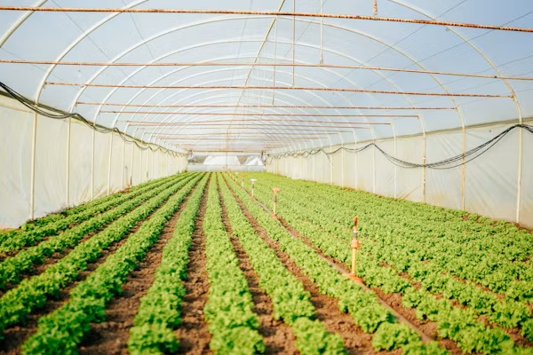
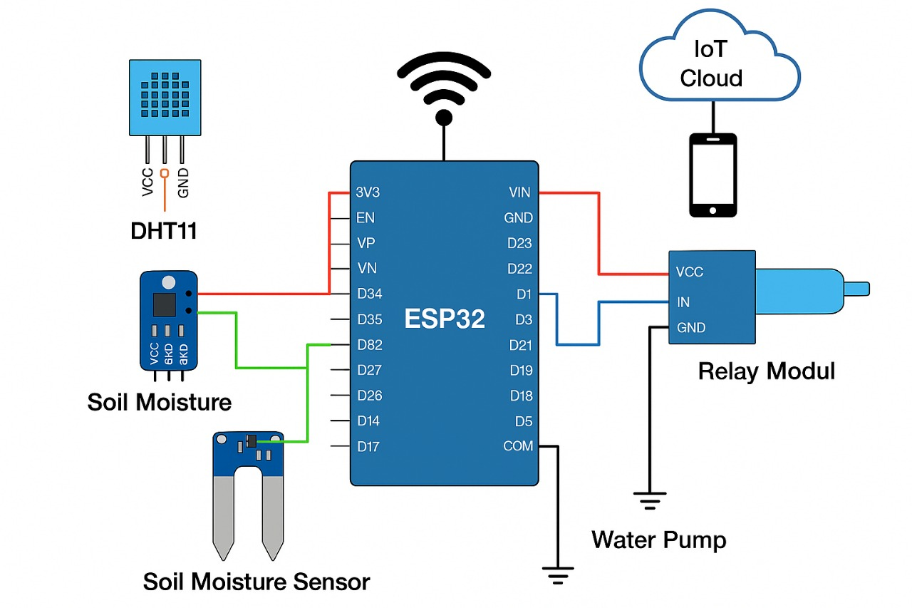

The objective of the Smart Agriculture System is to design and develop an IoT-based solution that automates
and optimizes agricultural practices by monitoring real-time environmental parameters such as soil moisture,
temperature, and humidity. The system aims to:
• Enhance crop yield and productivity
• Reduce manual labor through automation
• Enable data-driven decision-making
• Ensure efficient use of water and other resources
• Provide remote monitoring and control for farmers
By integrating sensor networks, microcontrollers, and cloud connectivity, this system facilitates precision farming,
promotes sustainability, and empowers farmers with actionable insights for better farm management.
Mode: Automatic
Status: --
Soil Moisture: --
Temperature: --°C
Humidity: --

This schematic illustrates how the ESP32 microcontroller connects to the DHT11 sensor, soil moisture sensor, and a relay-controlled water pump. Real-time data is sent to an IoT cloud platform, allowing farmers to monitor conditions and automate irrigation remotely. This integration promotes efficiency, smart water use, and better crop outcomes.